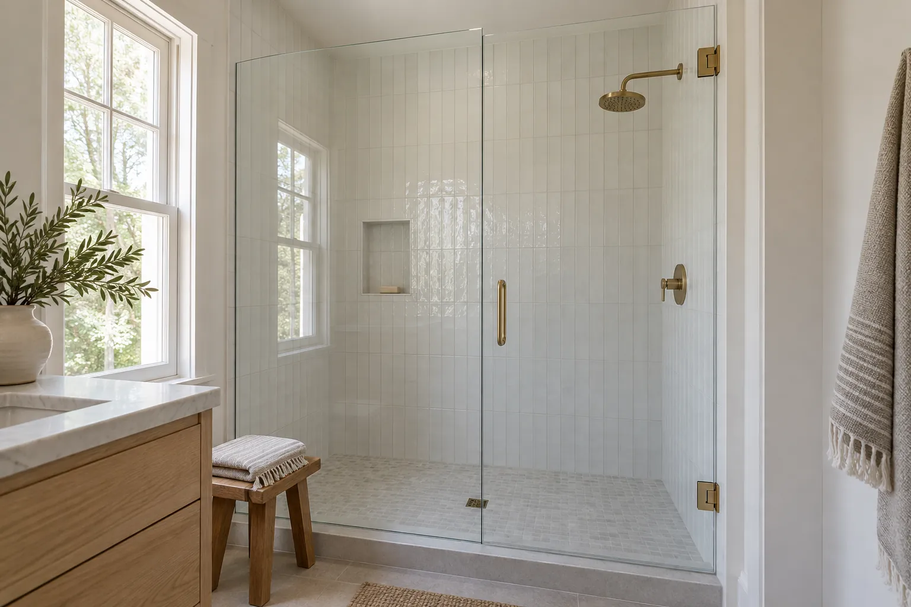
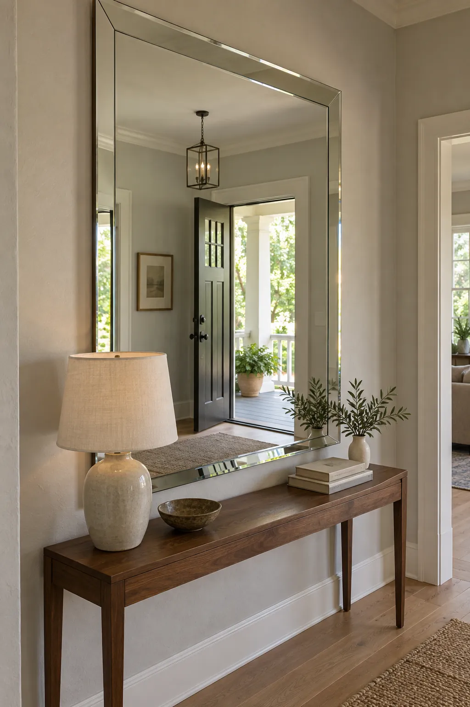
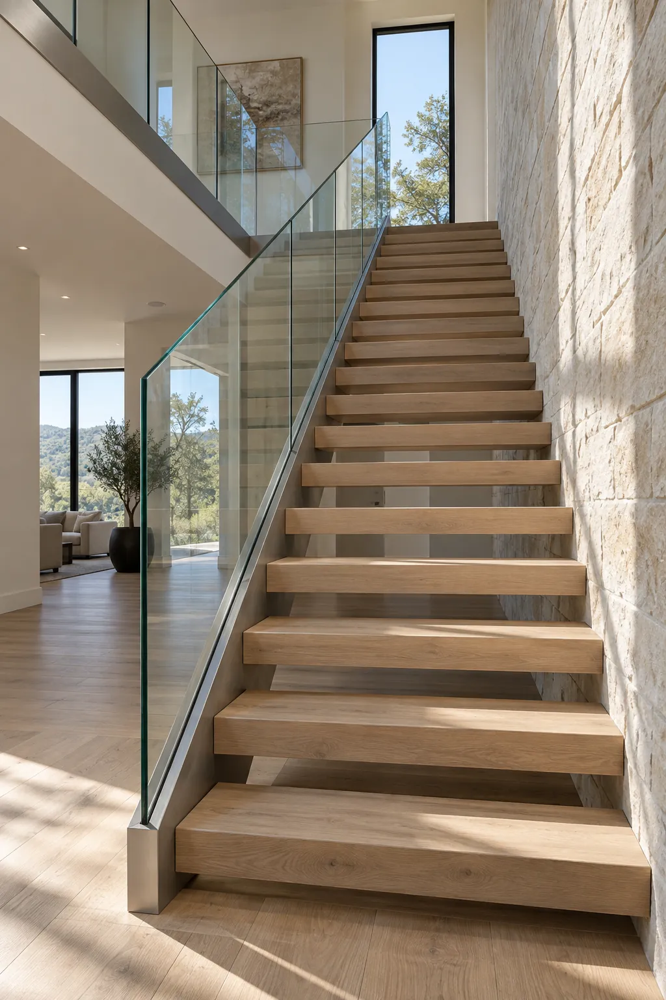

We use only the highest quality materials on every job.
Our friendly team is here to help with all your glass needs.
Competitive prices and free estimates on all projects.
Clearline Glass & Mirror is a full-service glass company serving Austin and the surrounding areas. We specialize in window repair, shower doors, mirrors, storefronts and emergency board-up. Call today for a free estimate!


